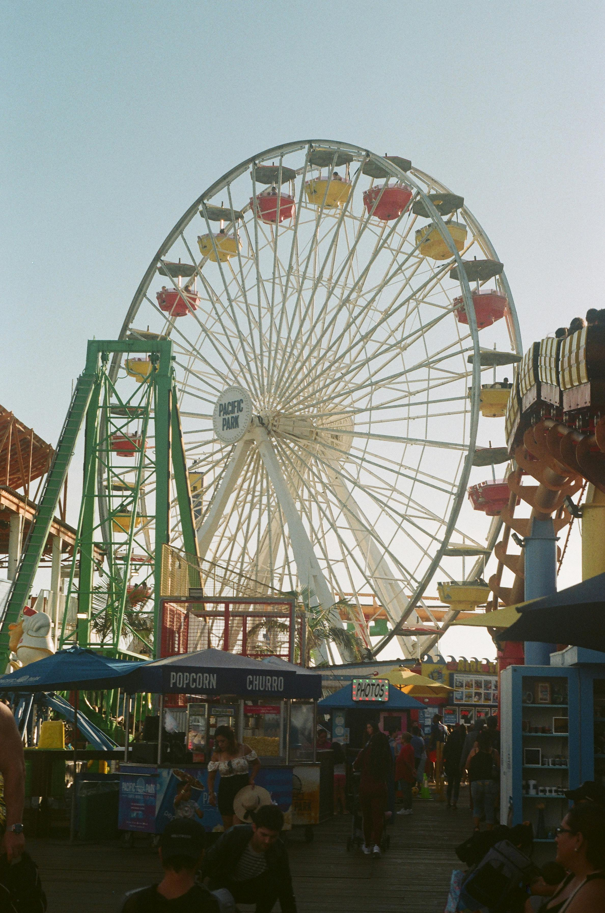

Uso de plástico reciclado pela indústria automotiva dispara 40% em um ano
Indígenas levam visibilidade de povos originários à Parada LGBT+ em São Paulo
Iniciativa do governo tenta estimular a reciclagem e diminuir a quantidade de resíduos no Brasil



O consumo de bebidas à base de plantas aumenta 174% no Equador
Melhores lugares para viajar no Brasil: 10 destinos incríveis
Gigantes da indústria de videogames entram na luta contra as mudanças climáticas
Desertificação atinge 13% do semiárido brasileiro e ameaça conservação da caatinga
Seis meses após iniciar avaliação, Hopi Hari aguarda laudo para revitalizar torre de queda livre fechada desde 2012